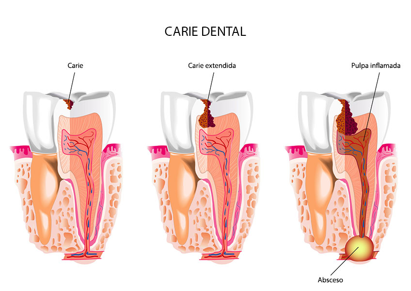

La Odontologia general se encarga de los procedimientos basicos odontologicos, tales como, diagnostico, radiografías, empastes(calzas), extracciones de piezas y limpiezas.
El disgnostico preventivo, realizado en una visita de odontologia general puede prevenir deferentes padecimientos en el futuro.
Es de vital importancia visitar al dentista para realizar un chequeo preventivo.
Dentro de los tratamientos o servicios de odontología general más populares se encuentran entre otros:
La caries dental es la destrucción del esmalte dental, la capa dura externa de los dientes. Puede ser un problema para niños, adolescentes y adultos. La placa, una película pegajosa de bacterias, se forma constantemente en los dientes. Cuando se comen o beben alimentos que contienen azúcares, las bacterias de la placa producen ácidos que atacan el esmalte dental. La gran adherencia de la placa mantiene estos ácidos en contacto con los dientes y, con el tiempo, el esmalte puede descomponerse. Entonces es cuando se forma la caries.

Puede evitar la formacion de las caries siguiendo los siguientes pasos:
Hay diversos métodos para blanquear los dientes. Se pueden comprar productos blanqueadores para uso diario en una farmacia o seguir las indicaciones de su dentista.
Los productos contienen peróxido de hidrógeno o peróxido de carbamida. Debido a que estos productos se descomponen, el oxígeno entra en el esmalte dental, aclarándolos. Así mismo, los dentistas pueden usar láser para conseguir este resultado.
A medida que se envejece y de acuerdo con la propia naturaleza humana, los dientes comienzan a oscurecerse. A menudo, este proceso se produce con mayor celeridad por diferentes causas:
Los motivos más habituales para la práctica de una exodoncia son la existencia de una caries y la enfermedad periodontal, si bien también puede ser necesaria en caso de dientes retenidos, supernumerarios, anomalías de posición y situación, dientes temporales o dientes relacionados con quistes y tumores.
Actualmente la evolución registrada en aspectos como la protección antibiótica para prevenir la infección, las técnicas de anestesia, el medio y personal adecuado, etc. hacen que sean muy pocas las situaciones en que no pueda realizarse la exodoncia.
Sí cabe plantearse la posibilidad de aplazarla en el caso de que exista una infección previa en el propio diente o en el tejido periodontal, o haya un abceso o celulitis. No obstante, en la mayoría de los casos, con la protección antibiótica adecuada y la técnica de anestesia troncular (que permite la inyección del anestésico en zonas alejadas del diente), puede realizarse la extracción del diente sin mayores complicaciones.
No se realizará la exodoncia en el caso de que el diente esté implicado en procesos tumorales malignos a causa del riesgo de hemorragia, mala cicatrización o crecimiento y difusión del tumor. En estos casos, la extracción siempre se hará en el bloque de la masa tumoral con los márgenes de seguridad recomendados.
Las carillas dentales son unas láminas de porcelana que se colocan en la parte visible de los dientes para corregir defectos estéticos.
Las carillas son un tratamiento muy sencillo de colocar indicado para corregir defectos leves como problemas de pigmentación o pérdida de brilo, pero que no está recomendado si existen caries ya que lo único que haría es ocultar el problema.
La carilla dental se pega sobre el diente con una resina especial , en una sola visita se pueden colocar varias. Existen dos tipos de carillas de composite (resina) o de cerámica, la diferencia es la duración y resistencia. Las carillas necesitan ciertos cuidados puesto que pueden despegarse o fracturarse.
Limpieza de los dientes (también conocido como profilaxis, literalmente, un tratamiento preventivo de una enfermedad) es un procedimiento para la eliminación de sarro (placa mineralizada) que puede desarrollarse incluso con un cuidadoso cepillado e hilo dental, especialmente en áreas que son difíciles de alcanzar en el cepillado rutinario.